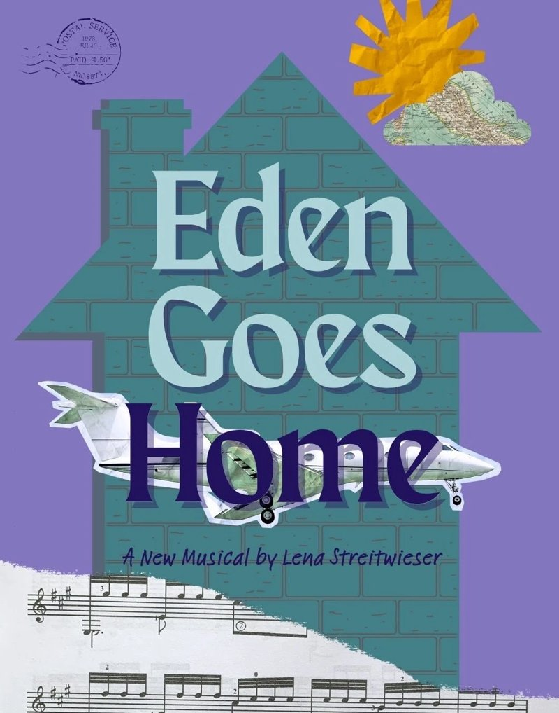

A new musical · Winterfest 2026
Eden Goes Home
Who are you when “home” isn’t home?
A new musical by Lena Streitwieser. December 8–12, 2026 at Teatro LATEA, New York City.
·days
·hrs
·min
·sec

Performances
Three performances at Teatro LATEA as part of Winterfest.
Tue, Dec 8
9:00 pm
Teatro LATEA
107 Suffolk St, New York
Wed, Dec 9
6:30 pm
Teatro LATEA
107 Suffolk St, New York
Sat, Dec 12
4:30 pm
Teatro LATEA
107 Suffolk St, New York
Welcome home. Sort of.
Eden Summers has a place at Trinity College Dublin and a plan. Then her grandmother’s dementia worsens, and she is back in the small American town she worked so hard to leave.
Help us get it on its feet
Eden Goes Home is independently produced and fiscally sponsored by Fractured Atlas. Your tax-deductible gift pays artists fairly and funds the production.
Support the show